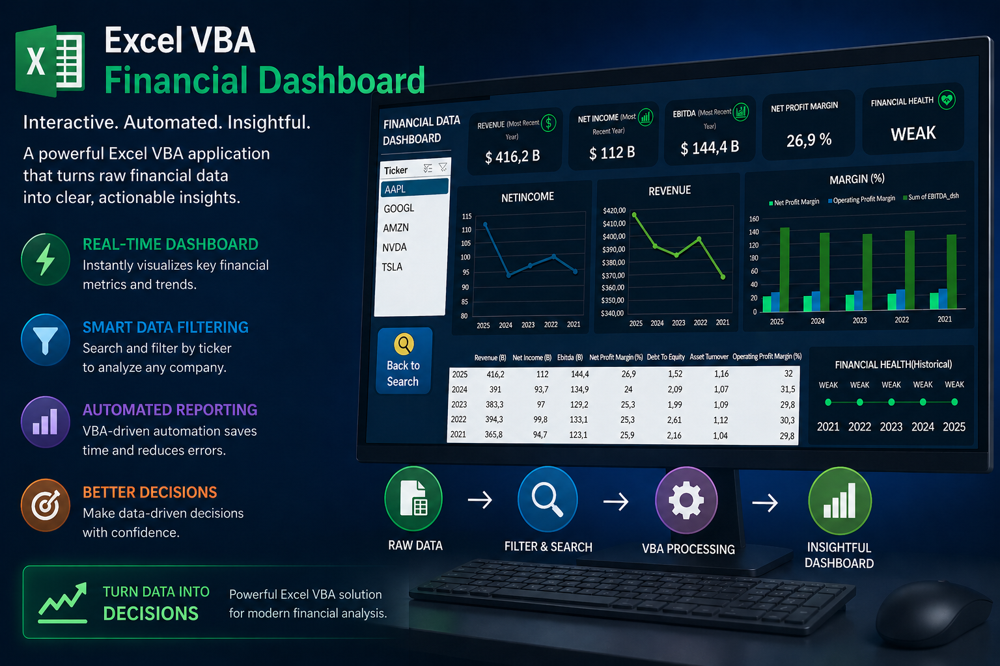
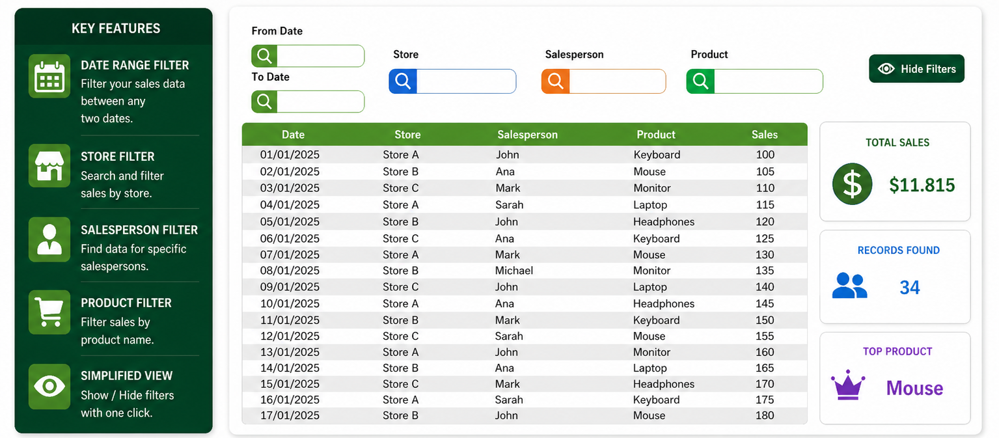

Interactive financial dashboard built with Excel VBA and Power Query that automates financial analysis, visualizes revenue trends and allows users to explore company performance through dynamic charts and metrics.
Excel VBA invoicing system that retrieves customer and product data, automatically generates invoices, stores transaction records, prints invoices, exports them to PDF and sends them via email using VBA automation.
Point of Sale system built with Excel VBA that allows baristas to register orders, calculate totals and manage daily sales in a simple user interface

Excel VBA tool that allows users to dynamically filter sales data by date, store, salesperson and product, improving analysis and decision making.